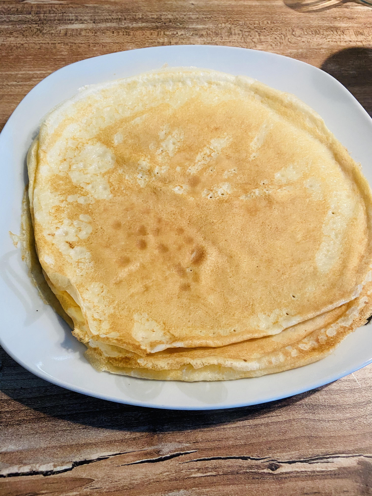

Cookarica
Palačinke

Sastojci
250 g brašna
2 jaja
500 ml mlijeka
prstohvat soli
Priprema
Umutite jaja s mlijekom i soli.
Dodajte brašno i miješajte do glatkog tijesta.
Pecite na vrućoj tavi s malo ulja.
← Natrag na recepte